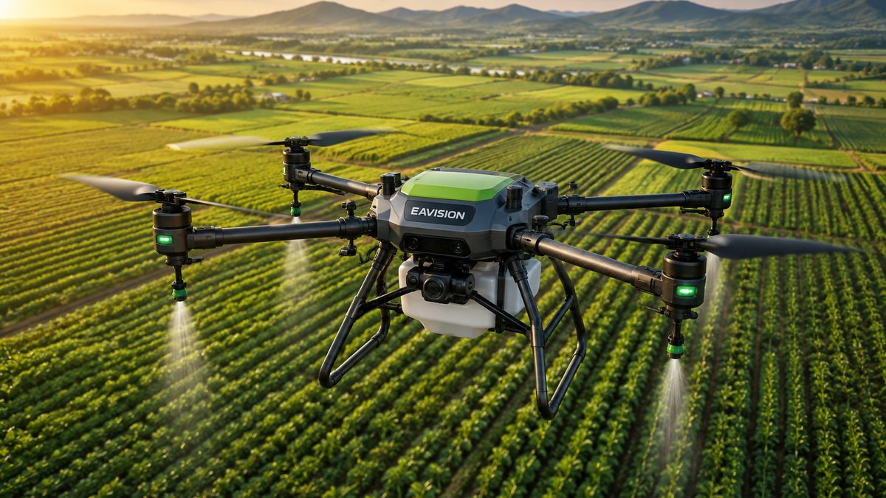

EAVision J150 Curi Perhatian di Agrishow 2026: Drone Sprayer untuk Lahan Berkontur
Drone J150 dipamerkan di Agrishow 2026 dengan kemampuan mengikuti kontur lahan dan deteksi rintangan 360°.
EAVision J150 Draws Attention at Agrishow 2026: A Spray Drone for Contoured Land
The J150 drone was showcased at Agrishow 2026 with terrain following and 360° obstacle detection.
EAVision J150亮相Agrishow 2026：专为起伏地形设计的植保无人机
J150无人机在Agrishow 2026展出，具备仿地飞行和360°障碍物探测功能。

Tidak semua lahan pertanian datar dan rapi. Perkebunan di perbukitan, sawah terasering, dan tanaman dengan kanopi rapat sering menyulitkan penyemprotan, baik secara manual maupun dengan drone.
Tantangan inilah yang coba dijawab EAVision lewat drone J150. Pada pameran Agrishow 2026 di Brasil (27 April–1 Mei 2026), EAVision memamerkan kemampuan terbang otomatis J150 di kondisi lahan yang kompleks melalui area demonstrasi langsung.
Kenapa Lahan Berkontur Jadi Masalah?
Agar hasil semprot merata, drone harus menjaga jarak yang stabil dari tanaman. Di lahan miring atau berundak, ketinggian tanah terus berubah. Jika drone terbang terlalu tinggi, cairan mudah terbawa angin. Jika terlalu rendah, drone berisiko menabrak tanaman atau rintangan.
Keunggulan EAVision J150
Mengikuti Kontur Lahan Secara Aktif
J150 dilengkapi fitur terrain following aktif yang menjaga ketinggian terbang tetap stabil mengikuti permukaan lahan. Dalam salah satu uji lapangan, J150 mampu menyemprot lahan terasering yang curam dengan ketinggian dan cakupan semprot yang tetap konsisten.
Deteksi Rintangan 360°
Sistem 360° Laser Compound Eye Perception menggabungkan teknologi compound eye dan radar terarah untuk mendeteksi rintangan ke segala arah hingga jarak 150 meter, sehingga drone tidak memiliki titik buta.
Satu Drone, Banyak Fungsi
Selain menyemprot, J150 dapat dipakai untuk menebar pupuk atau benih, mengangkut barang, dan memetakan lahan. Laju alir semprotnya mencapai 40 liter per menit, muatan tebar hingga 80 kg, dan pemetaan hingga 13,3 hektare dalam satu kali terbang.
Manfaat bagi Petani dan Perkebunan
Penyemprotan yang lebih merata membantu pupuk dan pestisida bekerja lebih efektif. Karena prosesnya otomatis, kebutuhan tenaga kerja berkurang dan operator tidak perlu terpapar langsung bahan kimia di lapangan.
Kemampuan menjaga ketinggian di lahan miring juga membuat drone ini cocok untuk perkebunan di daerah perbukitan yang banyak ditemui di Indonesia.
Kesimpulan
EAVision J150 menunjukkan arah perkembangan drone pertanian saat ini: bukan hanya mengangkut lebih banyak, tetapi juga lebih cerdas membaca kondisi lahan. Untuk lahan berkontur, kemampuan ini bisa menjadi pembeda utama.
EAVision J150 tersedia di DASS. Sebagai distributor resmi EAVision, kami siap membantu demo dan perhitungan kebutuhan drone untuk lahan Anda. Lihat detail J150.
Butuh saran? Hubungi kami.
Sumber: GlobeNewswire, DroneXL.
Not all farmland is flat and tidy. Hillside plantations, terraced paddies, and crops with dense canopies often make spraying difficult, whether by hand or by drone.
EAVision is tackling this challenge with the J150 drone. At Agrishow 2026 in Brazil (27 April–1 May 2026), EAVision demonstrated the J150's autonomous flight in complex field conditions in a live demo area.
Why Is Contoured Land a Problem?
For even coverage, a drone must keep a steady distance from the crop. On sloping or terraced land, the ground height keeps changing. Fly too high and the spray drifts in the wind; fly too low and the drone risks hitting crops or obstacles.
EAVision J150 Highlights
Active Terrain Following
The J150 has active terrain following that keeps flight height steady relative to the ground. In one field test, the J150 sprayed steep terraces while keeping its height and spray coverage consistent.
360° Obstacle Detection
The 360° Laser Compound Eye Perception System combines compound-eye technology with directional radar to detect obstacles in every direction up to 150 metres away, leaving no blind spots.
One Drone, Many Jobs
Besides spraying, the J150 can spread fertiliser or seed, lift cargo, and map fields. It reaches a spray flow rate of 40 litres per minute, a spreading payload of up to 80 kg, and mapping of up to 13.3 hectares in a single flight.
Benefits for Farmers and Plantations
More even spraying helps fertiliser and pesticide work more effectively. Because the process is automated, less labour is needed and operators are not directly exposed to chemicals in the field.
Its ability to hold height on slopes also makes the drone well suited to the hillside plantations common across Indonesia.
Conclusion
The EAVision J150 shows where agricultural drones are heading: not just carrying more, but reading field conditions more intelligently. On contoured land, this capability can make all the difference.
The EAVision J150 is available at DASS. As the authorised EAVision distributor, we can arrange demos and help calculate the drones you need for your land. View J150 details.
Need advice? Contact us.
Sources: GlobeNewswire, DroneXL.
并非所有农田都平整规则。山坡种植园、梯田以及冠层茂密的作物，无论人工还是无人机喷洒都常常面临困难。
EAVision正以J150无人机应对这一挑战。在巴西Agrishow 2026展会（2026年4月27日至5月1日）上，EAVision通过现场演示区展示了J150在复杂田间条件下的自主飞行能力。
为什么起伏地形是个难题？
要喷洒均匀，无人机必须与作物保持稳定距离。在坡地或梯田上，地面高度不断变化。飞得太高，药液容易被风吹散；飞得太低，又可能撞上作物或障碍物。
EAVision J150的亮点
主动仿地飞行
J150具备主动仿地功能，可随地面起伏保持稳定的飞行高度。在一次田间测试中，J150在陡峭的梯田上喷洒时，飞行高度和喷洒覆盖始终保持一致。
360°障碍物探测
360°激光复眼感知系统结合复眼技术与定向雷达，可在150米范围内全方位探测障碍物，不留盲区。
一机多用
除喷洒外，J150还可用于撒肥或播种、吊运物资和测绘地块。其喷洒流量达每分钟40升，撒播载重最高80公斤，单次飞行测绘面积最高13.3公顷。
对农民和种植园的好处
喷洒更均匀，有助于肥料和农药更有效地发挥作用。由于作业自动化，所需人力减少，操作员也无需在田间直接接触农药。
在坡地上保持高度的能力，也使这款无人机非常适合印尼常见的山地种植园。
结论
EAVision J150展示了农业无人机的发展方向：不仅载得更多，还能更智能地感知田间状况。在起伏地形上，这种能力往往是决定性的优势。
DASS现已供应EAVision J150。 作为EAVision授权经销商，我们可为您安排演示，并根据您的土地测算所需无人机。查看J150详情。
需要建议？联系我们。
资料来源： GlobeNewswire, DroneXL.